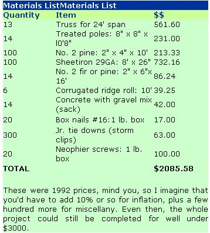

Build A Pole Barn For Animal Shelter: I Built A Pole Barn For Under $3,000
This is a simple animal shelter, a 24-foot by 50-foot versatile pole barn building for livestock animals or livestock feed you can construct in a few weeks.
By Ellen Franklin
February/March 1995
I'm a 5'4", 115-pound grandmother pushing 50. Certainly no "super-woman." When people ask me how I first learned how to build animal shelters and pole barns, I feel as though they are asking how I first learned to eat with a knife and fork.
In La Luz, New Mexico, in the early 1950s, such skills as pole barn building were passed from elders to children without anyone being aware of a teaching-learning relationship. In that era of the family farm, we would repair the tractor, vaccinate the cattle or mend the fence without the aid of a mechanic, vet or carpenter. The typical family farm worked because everyone worked and I became "Jane-of-all-trades" because my father had no sons. My marriage to south Texas rancher Don Franklin added his family's skills to my own and together we spent 15 years in Third World nations applying our abilities to the production and processing of food. In Angola, Africa, "lumber" for any construction project began with cutting trees yourself, while in Guadalajaran deserts of Colombia, it meant dismantling the packing crates our supplies were shipped in. A shelter for animals or feed was a necessity everywhere we went and when it needed building, we built it. To raise a pole barn, I was used to sinking a few tree trunks in the ground to act as both foundation and roof-and-wall supports and then nailing up rough board stringers and rafters for fastening a tin roof. After I called a local contractor and was told that such a pole barn on my new property would cost $10,000, I just offered an amused smile. I got out the old tools and began planning. What do they say about life experience being invaluable...?
I think the "know-how" of a project like this one is highly overrated. What you really need is 50% confidence that you can do it and 40% knowing where to find the answers before you make the mistakes. The other 10% is a little skill in the use of a hammer and saw. This barn can be built by anyone using the instructions here. I have even included my mistakes so that you will feel free to make your own original mistakes without repeating mine.
You should start with a call to the local Building Inspection Service at your county seat to see what building code restrictions apply. Be sure to stress that your structure is not for human habitation, but is intended for agricultural use. Most states have more lenient structural requirements for farm buildings than for homes or garages. Still, you may need to have drawings and a spec sheet approved and have the building inspected at several stages.
So, here's how I did it and what I did wrong.
LayoutFind some flat, firm ground that doesn't hold standing water for long at any time of the year and determine your barn's outer dimensions. Standard 2"-thick building lumber is cheapest in 8' lengths, so design in 8' sections, especially if you plan to roof it or add floors or siding using 4' x 8' sheets of plywood, particle board or stock 8' boards. My barn is 48' long and supported by seven poles on each side, which divides into six 8'-wide bays per side. I left 8' of pole above ground to make walls an even 8' high.
You can build a roof frame from scratch and cover it with plywood and shingles, but this calls for precise measurements. Faster, easier and cheaper is what I call a "tin roof": galvanized corrugated sheet metal supported by trusses-where horizontal joists, the angled rafters and the supports between them come preassembled. You can make or buy trusses in any size; mine were already made to fit a 24'-wide building, so that's how wide I made the barn. Tin roofing comes in 4'-or yard-wide sheets that can be cut to any length. It overlaps where two sheets meet both side-to-side and end-to-end, so you needn't fuss over the dimensions of the angled "shed" of the roof.
Still, the magic word for the pole-and-board frame is "square." If you don't start with all measurements accurate and keep every pole vertical, every corner a perfect 90°, and all the roof members plumb and parallel, you are in big trouble when those factory-perfect rectangles of tin roofing do not fit your off-shaped building.
I dug most of my postholes in all the wrong places the first time around and had to dig them over. Finally, I learned to start with a stake in the center of where I wanted the barn. From that center point I set stakes at each of the four corners. Regardless of the size of your barn, you can be sure it is square if you make each letter in the following diagram the same length as all the corresponding letters and set corner stakes at each point.
You can be certain that each of your corners is an exact 90° by making a pattern out of wood slats or cardboard. Nail (or glue) the strips of material into a triangle that is 3' by 4' by 5' on the outside edge. The corner produced where the 3' and 4' lengths join is exactly 90 degrees. Check each of the corners of your foundation against this gizmo and save it for future use.
Now lay 8' boards along the sidelines of the stake-and-string outline where the posts will go. At the ends and where the 8-footers meet will be where you sink post-holes (see the diagram bellow). Dig your holes to below frost level in cold country-at least one third as deep as your walls will be high. Here in New Mexico, winter nights are cold but the ground does not freeze deep, so for 8' walls, I trimmed my poles to 10'8" and made the holes 2'8" deep. Our brick-adobe soil is hard as rock, so I didn't dig an inch deeper than I had to. If we built nearer the sand desert where upper layers of soil can be loose, I'd have dug the postholes at least half the posts' above-ground length.
A tractor-powered posthole auger is easiest, but if your land is soft, you can dig with a clamshell handdigger (in brick-adobe it is easiest to pour water in the hole repeatedly, let it soak up and muck it out in layers). To keep the poles from leaning over time, you should disturb the natural compaction of the soil as little as possible, so make the holes as near to the width of the poles as you can. Using a string level, stretch a level string line along the outside edge of your holes so that your poles will go into the hole without disturbing the string line. Measure the depth of each hole from the string to the bottom of the hole and ignore the level of the ground. In desert country, dig each hole 2 inches deeper than you need and pour 2 inches of concrete in the bottom. Let it set for one day. Where ground is moist enough to rot wood, dig hole 6" deeper than needed and fill with crushed rock for good drainage. It is also a good idea to coat the bottom of your post with roofing tar in areas with high subsoil moisture. Tamp well.
The Poles
I used telephone poles because they were cheaper than poles from the lumberyard and I could never recall seeing one rot. I figured they would be better and I was half-right. The other half didn't consider that telephone poles are not all the same size and it takes a little extra work to line them up. In this case, the extra work was well worth the dollar savings. However, I also had to move these myself, cut them to length and place them in the holes-all by hand. This process took more than a week. Another option, of course, would have been to buy the poles at a lumberyard. For each individual, it becomes a question of time versus money. Which is more valuable to you? If you decide to cut the poles yourself, it is best to use a handsaw. The chain in a chain saw will quickly be destroyed by the gummy substance these poles are treated with. Once in the hole, short poles like my 10-footers can be horsed around by rotating them in the hole bottom and banging them into place with a sledge and long pry bar. Place poles so their outer edges are all in a line, and let the inner line fall where it may.
These were 1992 prices, mind you, so I imagine that you'd have to add 10% or so for inflation, plus a few hundred more for miscellany. Even then, the whole project could still be completed for well under $3000.
Next, you need to brace each pole into an upright position. Secure a stake in the ground about 6' away from each pole to nail your brace to. Using a carpenters level, stand each pole up straight and nail two braces to each pole to hold it in place as in the diagram below.
Now stand at one end of your wall and sight down the length of the wall. The top edge and the bottom edge of your poles must be in a straight line at the outside edges. So now, you pitch the carpenters level over your shoulder and adjust any pole that does not line up by sight. The middle areas of your poles may not be straight because telephone poles are not exactly even, but as long as the tops and bottoms are in line, you will come out perfectly well in the end.
If you are absolutely certain that your poles are in the right position, pour one sack of ready-mix concrete into each hole. Remember, you can't change a thing once that cement is poured so be sure you are right. Let it set for at least two days. Then, fill the hole with dirt, adding in thin layers, tamping each well with a 2 x 4.
The Stringers
Now you want to nail long boards, or stringers, along the top edge of the poles to serve as the "plate," which supports edges of the roof trusses. I used 2" x 6" boards that came in 16' lengths. I had originally planned to use just one of these along the outside of the poles. But since the trusses I used were extra heavy, I decided that one would not be enough, so I put a second on the inside, shimming it out with thin wood slats or notching posts to set the boards in a bit to straighten out the waves in the "cattywumpus line." I leveled stringers with the carpenters' level and secured them with plenty of nails. For good measure, I further secured them, where the ends of two stringer boards met at a post, with galvanized metal truss plates nailed across the joint.
The Trusses
Prebuilt trusses are available from many lumberyards and are well worth the money, since these parts of a building must be designed to carry a lot of weight. I was able to purchase used ones from old military buildings at a very good price. As with most bargains, there was a catch, however. All of my trusses were evidently not from the same building and were not precisely the same. This caused a few problems along the way but nothing insurmountable. I would advise that you compare used trusses very carefully if you build with them. My oversight could have been disastrous. I was lucky.
A friend and I hung the first truss by hand from the back of a pickup truck. They must be placed on the stringers one at a time, hanging upside down, with the pointed ends jutting out an equal distance beyond the walls. Then, using poles and ropes, the trusses are rolled over into an upright position and hopefully it lands more or less where it is supposed to be. If not, you have to slide it into position by hand. Since there is almost nothing to anchor it to, this first truss is very difficult and very dangerous to set in place. Secure the first one with ropes, brace from the stringer, poles from the ground, and every other way you can find.
After setting the first one, my friend commented that he was going to need a “truss" of another kind if we had to raise any more that way. We hired a backhoe to set the others. Having tried it both ways, let me say that it is possible to do this job by hand, but you don't want to unless you have no choice. We nailed short pieces of 2 x 4 along the stringer as a "stop" where each truss should go and the backhoe just picked it up and held it in position while we anchored it in place. We used a carpenter's level to get them straight up and down.
I put a truss every four feet, which made every other one and the two end ones fall on top of a pole. All the others were set on the double stringers between poles.
Purlins
I used 10-foot-long 2 x 4s for the purlins (boards nailed lengthwise along the top of the trusses to fasten the roofing to). I fastened them every two feet, running from peak to eave along the trusses. For greatest possible strength, you can set these on edge across the trusses. However, that gives you only a two-inch surface to try to hit with your roofing nails when you put the tin on. The problem is that if you should miss the purlin with your nail, you may possibly leave a hole that will leak rain. Since I feel that the object of a roof is to keep the rain out, I decided to lay the purlins flat against the trusses, giving me four inches and doubling my chances of getting my nails into something solid under the tin. I set the purlins every two feet apart and, since the trusses were every four feet apart, I had a very strong roof without having the purlins on edge.
Be sure you use straight, unwarped lumber for the ridgeline and for the eaves. The ridge-line and bottom eave line purlins must be cut so the ends meet snugly on the end of a truss. A truss plate nailed at the junction adds strength.
Ridge Row
This is where that little snag I mentioned about the trusses not being exactly alike gave me a problem. When I got up on the support boards running along the top of the truss joists and sighted down the ridge of the roof, I could see that the peak of each truss was not in line. There was about a two-inch variance (some to the right and some to the left) of dead center. I located where the center of the two end trusses should be by measuring from the eaves and dividing by half. At the true center point of both end trusses, I put a tall nail and stretched a string between to give me the true centerline of the building. Then I shimmed, trimmed or inset purlins as needed to bring the peak of each truss out to where the string intersected it.
Storm Clips
Storm clips are positively the greatest invention since round nails! I used about 300 of them in this building. I put one everywhere one would fit. We have very high winds in our part of the country, and I had no intention of having my nails pull out in one of our famous sand blasters. I gave special attention to the stringers because they were nailed to the telephone poles. Telephone poles are treated with creosote and creosote is mostly oil and oil causes things (like nails) to slide. Storm clips hold nails in place. I have heard them called by several names and there are several brands, but take a look at the photographs in the Image Gallery to the right for just a few applications
Roofing
Galvanized roofing doesn't have nailing holes in it, so you have to punch through, which can bend a lot of tin, nails and an occasional thumb. Another recent invention is the screw-in roofing nail. These fit into a special tool that attaches to an electric drill. Ask for them at your hardware or lumber store. I bought these because I reasoned that if a nail goes in straight it will come out straight with the first good wind. This is true but it isn't the best reason to buy them. The best reason is to save many man-hours of labor. I am sold on these screws since I have tried them. By the way, they don't look "self-tapping," but they are.
Tin roofing comes in long sheets that will run down a whole half-shed from eave to ridge. This makes for best weather tightness, but I prefer to overlap two or more (8-12-foot) pieces, as you can adjust for mistakes at the overlap and don't have to cut the metal to precise length, which takes a lot of hacksaw or tin snip time. If you do have to cut roofing, hide the cut edge under an overlap or ridge cap.
First, lay the bottom sheets of tin along the eaves, channels heading up and down and lower edges even, sticking out a few inches beyond the eave line. Lay the top sheets to overlap the upper end of the lower ones by at least six inches. If you live in windy and rainy country, overlap by a foot or more and/or install a rain gasket or a wide ribbon of clear, waterproof adhesive caulking between overlapping sheets. Also, use gasketed roofing fasteners or lay a blob of caulk under each screw or nail before you drive it home and then put another blob of caulk on top.
The last thing to go up are 8' lengths of galvanized ridge cap. This is fastened with the same screws. All you need worry about is getting it down the centerline of the roof and overlapping ends of meeting sections for a foot or so to keep out blowing rain. Aim the top section of the overlap away from the prevailing wind.
Close It In?
You can sink a pair of taller poles reaching from ground level to roof peak at the midpoint of each end, plus a pair of poles between that middle and each outer pole, to close in the ends. Run more stringers across the tops just as you did for the sides of your barn and one row at ground level all around the building except in the doorways. Evenly space two rows of any 2" lumber around the walls to give you a surface to nail siding to, then fasten on siding of more overlapping corrugated roofing, plywood or rough boards to create a 6-bay open-front equipment shed. Or, close it in and hang doors at one or both ends to keep livestock or to use for dry storage. Box in the eaves and add a woodstove for heat. After a season of wear, paint the metal for longest life. If you like, you can fancy it up with windows, electrical wiring or plumbing, and stick on a cupola or a wind vane. I didn't close this barn in because I wanted to use it in the hot New Mexico summers to keep rabbits cool, but other possibilities are wide open.
|
PHOTOS: WILLIAM HAINES Keeping things dry and at least partially wind-protected is indispensable on the farm. |
ILLUSTRATIONS; LAURIE GRACE Just a few of the myriad uses for storm clips in our construction. |
Poles must be braced perfectly straight before the concrete is poured. |
|
|
 |
|
 |
 |
|
|
|
|
|